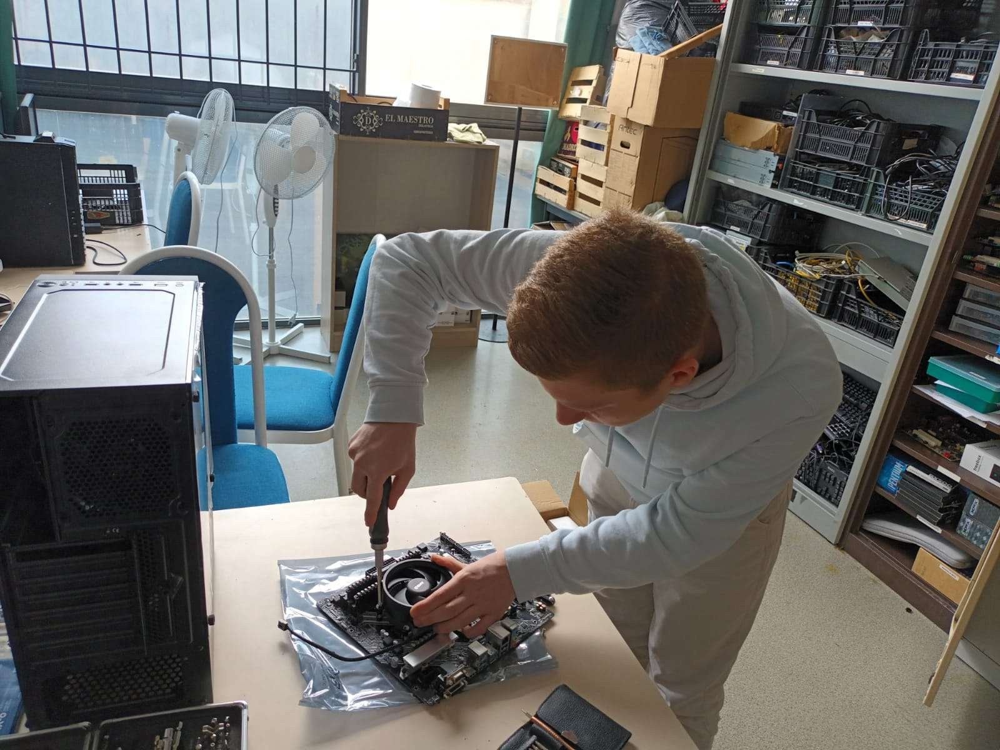

Bonjour, je suis Robin DUPEYRON,
Étudiant en Réseaux & Télécommunications
Bachelor Universitaire de Technologie IUT de La Rochelle (17)
résumé.
Je suis actuellement étudiant en BUT (Bachelor Universitaire de Technologie) à l’IUT de La Rochelle, dans le domaine des Réseaux & Télécommunications, spécialisation Cybersécurité. A l’issue de ma formation, je prévois d’entrer dans le monde professionnel dans l’administration des systèmes et des réseaux informatiques.
- 2024 - Aujourd'hui
Bachelor Universitaire de Technologie (BUT) Réseaux & Télécommunications à l’IUT de La Rochelle (17), spécialisation Cybersécurité.
- 2021-2024
Baccalauréat Sciences Technologiques de l’Industrie du Développement Durable, spécialisation Systèmes de l’Information & du Numérique, mention très bien (Lycée Bernard Palissy, Saintes, 17)
- 2021-2024
Bénévolat en tant qu’administrateur systèmes & réseaux au sein de l’association de la Maison des Lycéens - Palissy. Gestion d’un parc informatique de 20 postes, baie serveur, caméras de surveillance... Président de l’association d’octobre 2023 à octobre 2024.
cv vidéo.
projets & passions.
Réalisation d'un concert solidaire et caritatif
En faveur de l’association “Cent Pour un Toit”. Gestion administrative & autorisations de l’évènement. 2000 euros récoltés pour l’association à l’issue de l’évènement.
Maquettes de cars scolaires via simulation
Réalisation de maquettes réalistes des cars scolaires présents dans la ville de Saintes (17) sur simulateur.
contact.
Pour toute demande, vous pouvez me contacter par les moyens de contact suivants :